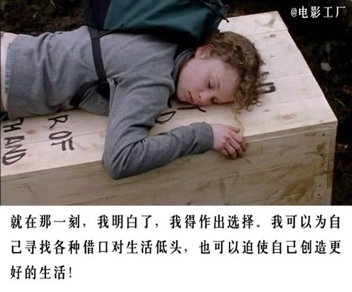

‘如果人活着没有理想，那和咸鱼有什么区别’。经典的不能再经典的港剧。我们的星爷的代表作，怎能不看？
霍金的作品改编剧。涵盖全片的是希望，全片透过监狱这一强制剥夺自由，高度强调纪律的特殊背景来展现作为个体的人对时间流逝，环境改造的恐惧，超级好电影

介绍了一位生长在纽约的女孩莉斯(Liz)经历人生的艰辛和辛酸，凭借自己的努力，最终走进了最高学府的经历
由史泰龙主演，讲述了一个拳击手从寂寂无闻到击败拳皇的艰辛历程，而史泰龙早年经历和剧情如出一辙，可以说是本色出演

《当幸福来敲门》是美国著名黑人投资专家克里斯·加德纳生平的真实写照，该书于2012年4月由清华大学出版社出版，他用生命诠释了责任和奋斗以及如何去实现梦想，永不放弃梦想，永远奋力
影片讲述了一个名叫威尔(Will Hunting)的麻省理工学院的清洁工的故事。威尔在数学方面有着过人天赋，却是个叛逆的问题少年，在教授蓝勃、心理学家桑恩和朋友查克的帮助下，威尔最终把心灵打开，消除了人际隔阂，并找回了自我和爱情。
该电影改编自真实事件，描述了一个没有法律背景的单身母亲，历尽艰辛，以永不妥协的勇气和毅力打赢了美国有史以来最大的一宗民事赔偿案。